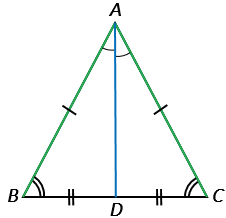
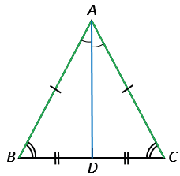

В равнобедренном треугольнике биссектриса, проведённая к основанию, является медианой и высотой
Дано: △АВС - равнобедренный, ВС - основание, АD - биссектриса.
Доказать: АD - медиана и высота.
Доказательство:
Рассмотрим △АВD и △АСD: АВ = АС по условию (△АВС - равнобедренный), АD - общая сторона, ∠BAD = ∠CAD, так как АD - биссектриса по условию, ⇒ △АВD = △АСD по первому признаку равенства треугольников ⇒ ВD = DC и ∠ADВ = ∠ADС.
Мы доказали, что ВD = DC ⇒ точка D - середина стороны ВС, тогда АD является медианой △АВС (по определению медианы).

Мы доказали, что ∠ADВ = ∠ADС, причем ∠ADВ и ∠ADС - смежные углы, поэтому ∠ADВ + ∠ADС = 1800, тогда ∠ADВ = ∠ADС = 900, т.е. АD⏊BC, а это означает, что AD является высотой △АВС (по определению высоты).

Теорема доказана.
Если в каком-либо треугольнике медиана и высота совпадут, то такой треугольник равнобедренный, а сторона, к которой они проведены, основание данного треугольника.